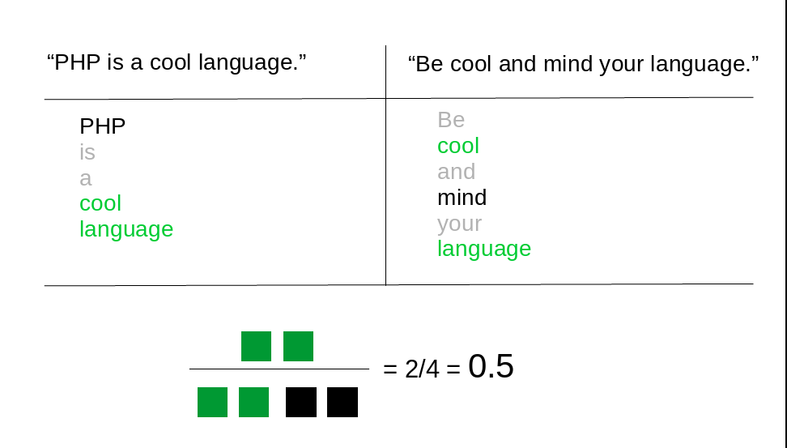

Machine Learning
- What is useful for
- Available plugins
- How to integrate
- A little code
Applications
(mostly for text)
- Anti-spam
- Post recommendation
- Post classification
- Text analysis
- Speech recognition
- A/B testing
- User login?
Available plugins
Integration
- As a native plugin
- As a wrapper for external services
Native
- Everything inside your installation
- Total control
- No PHP machine learning libraries
- Training in PHP is slow
- CMS not good for training
External
- Performance
- No stress
- Pay or maintain another system
Takeaway
-
Training/Algorithm (WP KO)
-
Model (WP OK)
-
Rest API is our friend
Let's write a model
- Data: blog posts
- Algorithm: text similarity
- Model: graph stored in
wp_postmeta - Recommend!
Algorithm
Jaccard/Tanimoto index

Jaccard/Tanimoto index
public static function similarity( $post_id_a, $post_id_b ) {
// Transform each post in a bag of words
$bow_a = self::post_2_bag_of_words( $post_id_a );
$bow_b = self::post_2_bag_of_words( $post_id_b );
// Compute Tanimoto
$intersection = array_unique( array_intersect( $bow_a, $bow_b ) );
$union = array_unique( array_merge( $bow_a, $bow_b ) );
return count( $intersection ) / count( $union );
}
Bag of Words
public static function post_2_bag_of_words( $post_id ) {
$post = get_post( $post_id );
// Take away HTML
$post_content = $post->post_content;
$clean_content = strtolower( wp_strip_all_tags( $post_content ) );
// Take away punctuation
$clean_content = str_replace( array(".", ",", ":", ";", "!", "?", "'", '"', "(", ")" ), "", $clean_content );
// Split tokens
$tokens = array_unique( explode( " ", $clean_content ) );
// Take away stopwords
return array_diff( $tokens, self::$stopwords );
}
Similarity graph
function dropout_update_recommendations( $post_id ) {
// Take latest 10 posts
$latest_posts = wp_get_recent_posts(
array(
'numberposts' => 10,
'post_type' => array( 'post', 'page' )
)
);
$similarities = array();
foreach( $latest_posts as $another_post ){
if( $another_post['ID'] !== $post_id ) {
// Measure similarity
$similarity = Dropout::similarity( $post_id, $another_post['ID'] );
$similarities[ $another_post['ID'] ] = $similarity;
// Update similarities for the other post
$already_computed_similarities = get_post_meta( $another_post['ID'], 'dropout_recommendations', true );
$already_computed_similarities[$post_id] = $similarity;
update_post_meta( $another_post['ID'], 'dropout_recommendations', $already_computed_similarities );
}
}
// Save recommendations for this post
update_post_meta( $post_id, 'dropout_recommendations', $similarities );
}
add_action( 'save_post', 'dropout_update_recommendations' );
function dropout_get_recommendations( $content ) {
$recommendations = get_post_meta( get_the_ID(), 'dropout_recommendations', true );
arsort( $recommendations ); // Sort by similarity
$html = 'See also
';
foreach( $recommendations as $recom_id => $similarity ) {
$recom_post = get_post( $recom_id );
$html .= '- ' . $recom_post->post_title . ' (' . $similarity .')
';
}
$html .= '
';
return $content . $html;
}
add_filter( 'the_content', 'dropout_get_recommendations' );